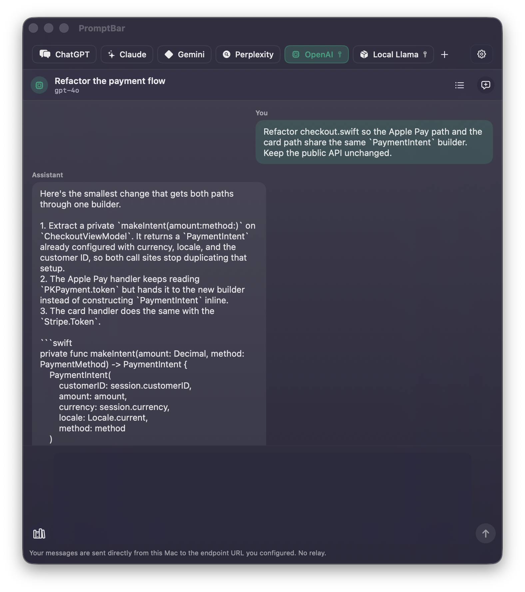
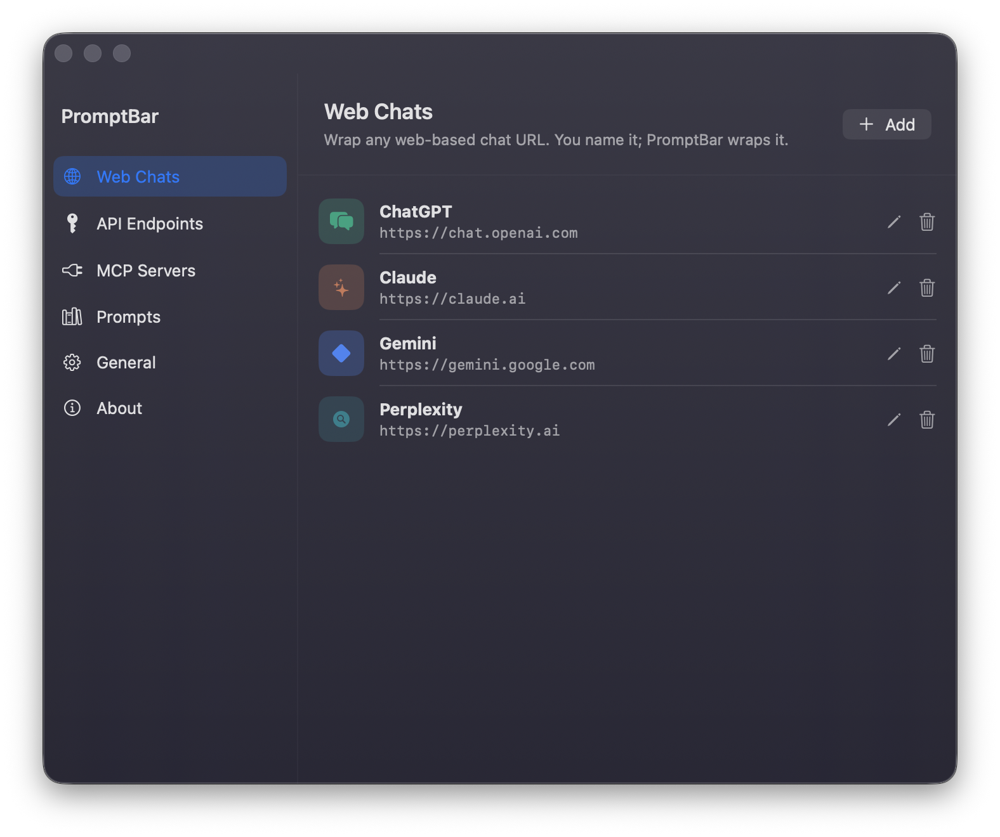
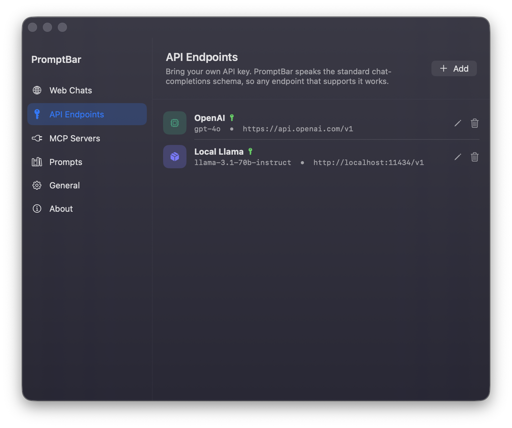
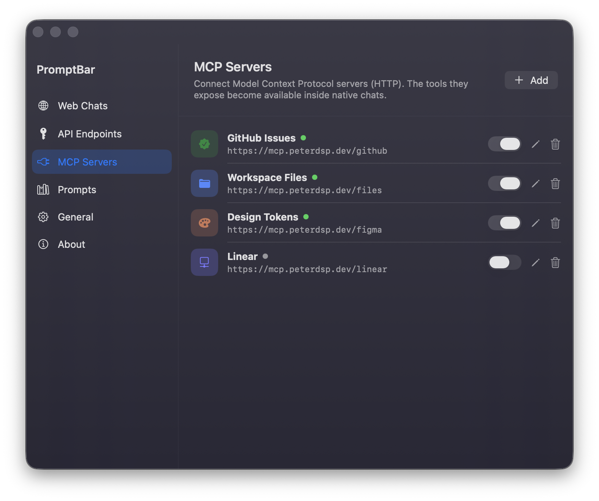
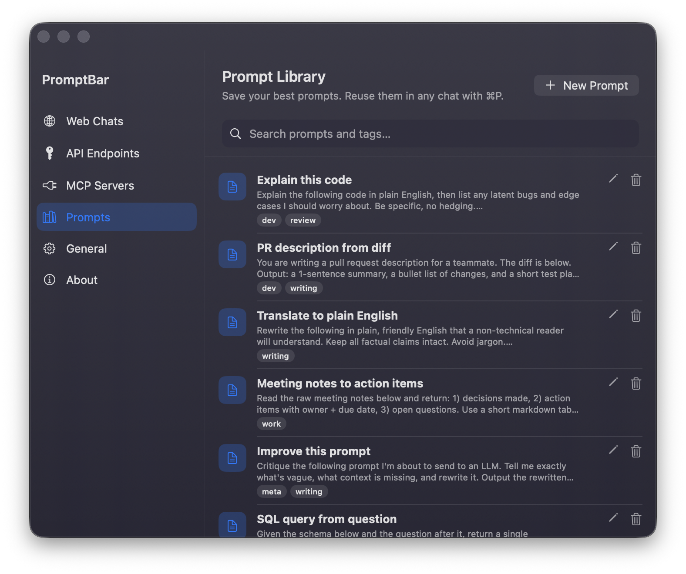

About PromptBar
PromptBar is a lightweight macOS menubar app that lives one keystroke away. It wraps any web-based chat in a clean popover and streams natively from any OpenAI-compatible endpoint the user configures with their own API key. Every message travels straight from the Mac to the endpoint URL: no relay, no accounts, no telemetry.
Built on macOS 26 Tahoe's Liquid Glass material system, PromptBar ships empty and stays out of the way. Web chats run inside a WKWebView, API keys live in the macOS Keychain, and a searchable prompt library sits one keyboard shortcut away. It is developed and maintained by an independent Swift developer and distributed through the Mac App Store, Ko-fi and GitHub Releases.
The facts
- Product
- PromptBar
- Category
- macOS menubar utility for AI chats
- Platforms
- macOS 26 Tahoe or later, Apple Silicon and Intel
- Availability
- Mac App Store, Ko-fi, GitHub Releases
- Pricing
- Paid on the App Store and Ko-fi. GitHub Releases ships a time-limited trial that unlocks with a Ko-fi licence.
- Licence
- Creative Commons Attribution-ShareAlike 4.0 International. Source available.
- Privacy
- No accounts, no analytics, no remote config. API keys stored in the macOS Keychain. Web-chat cookies stay local to the Mac.
- Size
- Roughly 5 MB installer package
- Stack
- Swift, SwiftUI, WebKit, Combine
- Website
- promptbar.peterdsp.dev
- Source
- github.com/peterdsp/PromptBar
- Store
- apps.apple.com/app/promptbar
- Built by
- Petros Dhespollari, independent Swift developer working in Tirana and Athens.
Screenshots and app icon
Full-resolution PNG. Open a file to view it, or use the download link to save it directly.











Who to talk to
PromptBar is built and maintained by one person. For review copies, interviews, corrections or anything the kit does not answer, write directly and you will get a reply from the person who wrote the code.